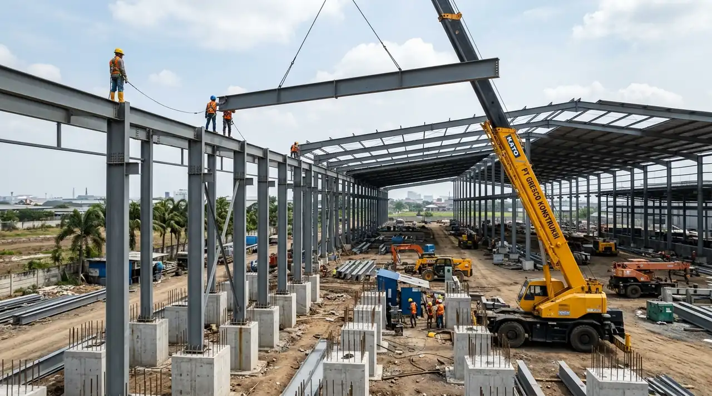

1. Karakteristik & Tantangan Teknis Bangunan Industri di Gresik
Pembangunan gudang dan pabrik di kawasan Gresik menuntut penanganan daya dukung tanah rawa pesisir dan pencegahan korosi atmosfer maritim agresif.
Berdasarkan data penyelidikan geoteknik di koridor Manyar dan pesisir utara Gresik, lapisan tanah atas umumnya didominasi sedimen aluvial dan lempung lanauan dengan nilai Standard Penetration Test (N-SPT) di bawah 5 hingga kedalaman 12-18 meter. Kondisi ini membuat pondasi dangkal tidak memadai untuk menopang beban tumpukan barang logistik maupun mesin getar industri berat.
Kontraktor Bangunan menerapkan standar rekayasa komprehensif melalui uji tanah sondir CPT dan deep boring untuk menentukan kedalaman tiang pancang presisi. Selain itu, kami menghitung beban angin pesisir pada atap bentang lebar sesuai SNI 1727 guna menjamin stabilitas rangka portal baja saat terjadi cuaca ekstrem.
- Uji Tanah Wajib: Lakukan uji tanah sondir minimal 3-5 titik dan deep boring 30 meter sebelum memesan panjang tiang pancang beton.
- Insulasi Atap: Pasang insulasi aluminium bubble foil atau glasswool di bawah spandek untuk menjaga suhu gudang tetap sejuk dan melindungi barang logistik.
- Proteksi Korosi: Gunakan sistem cat epoxy primer dengan ketebalan minimal 150 mikron pada struktur baja yang berlokasi dalam radius 5 km dari garis pantai.
2. Tahapan Eksekusi Rancang Bangun Gudang Modern di Gresik
Alur pembangunan terstruktur mencakup penyelidikan tanah lapangan, fabrikasi rangka baja presisi di workshop, ereksi lapangan dengan crane bersertifikasi SIO, serta pengecoran lantai laser screed.
Tahapan konstruksi dimulai dari perataan lahan (cut and fill) dan pemancangan spun pile menggunakan metode Hydraulic Static Pile Driver (HSPD) bebas getaran. Selanjutnya, struktur pedestal beton bertulang dicor sebagai tumpuan kolom baja WF.
Pada bagian superstructure, balok rafter dan kolom WF dirakit di workshop menggunakan pengelasan otomatis Submerged Arc Welding (SAW), kemudian dipasang di lapangan dengan baut torsi mutu tinggi Grade 8.8 (A325). Pengecoran lantai mengadopsi jidar laser (laser screed) dan diakhiri pemotongan sambungan susut (saw-cut joint sealant) untuk mengeliminasi potensi retak rambut.

Proses ereksi kolom portal frame baja WF dan penulangan plat lantai heavy duty di lokasi proyek.
3. Tabel Komparasi Spesifikasi Gudang Industri di Area Gresik
Tabel komparasi menyajikan estimasi biaya, spesifikasi struktur, dan peruntukan gudang logistik serta pabrik manufaktur di Gresik.
Setiap jenis industri membutuhkan spesifikasi yang berbeda. Gudang logistik FMCG membutuhkan bentang lebar tanpa tiang tengah, sedangkan pabrik manufaktur berat memerlukan konsol rel untuk overhead crane dengan daya angkat hingga 10 ton.
| Parameter Evaluasi | Gudang Logistik Umum (Manyar) | Pabrik Manufaktur Berat (JIIPE) | Gudang Transit Workshop (Driyorejo) |
|---|---|---|---|
| Profil Rangka Baja | Baja WF 250 - WF 400 | Baja WF 400 - WF 700 + Konsol Crane | Rangka Baja WF 200 - WF 350 |
| Kapasitas Beban Lantai | 3.000 – 5.000 kg/m² | 5.000 – 10.000 kg/m² (Dinamis) | 2.000 – 3.000 kg/m² |
| Mutu Beton Plat | K-300 / K-350 tebal 15-18 cm | K-350 / K-400 tebal 20-25 cm | K-250 / K-300 tebal 12-15 cm |
| Penutup Atap & Dinding | Spandek Zincalume 0.45 mm + Foil | Sandwich Panel PUF / Rockwool | Spandek Galvalum 0.40 mm |
| Estimasi Biaya / m² | Rp 2.600.000 – Rp 3.400.000 | Rp 3.500.000 – Rp 5.200.000 | Rp 2.300.000 – Rp 3.000.000 |
4. Legalitas Perizinan PBG & Sertifikat Laik Fungsi (SLF) di Gresik
Setiap bangunan industri wajib memenuhi regulasi teknis Dinas Cipta Karya dan Tata Ruang Kabupaten Gresik melalui sistem SIMBG.
Tim arsitek dan tenaga ahli struktur berlisensi STRA serta SKA Utama kami mendampingi pemilik proyek mulai dari tahap pra-konsultasi, sidang penilaian Tim Profesi Ahli (TPA), pemenuhan rekomendasi proteksi kebakaran Disdamkar Gresik, hingga terbit dokumen Persetujuan Bangunan Gedung (PBG) dan SLF operasional.
Pertanyaan yang Sering Diajukan (FAQ)
Kesimpulan Praktis
Membangun gudang dan pabrik di kawasan strategis Gresik memerlukan perencanaan matang yang mengintegrasikan aspek geoteknik tanah pesisir, pemilihan material struktur tahan korosi, dan kecepatan legalitas izin PBG.
Percayakan proyek industri Anda kepada tim spesialis Kontraktor Bangunan. Kami menjamin ketepatan mutu SNI, jadwal Kurva S yang terkendali, dan garansi resmi purna jual.